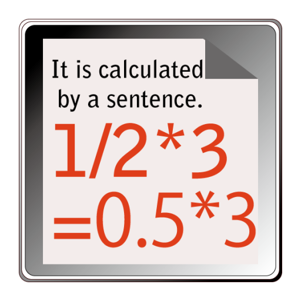
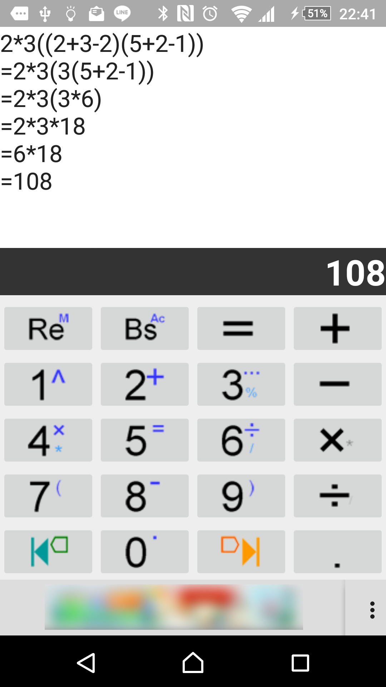
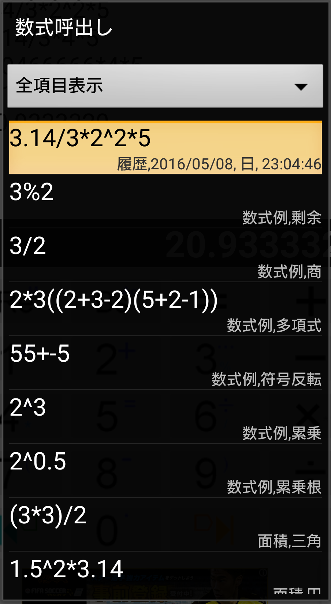
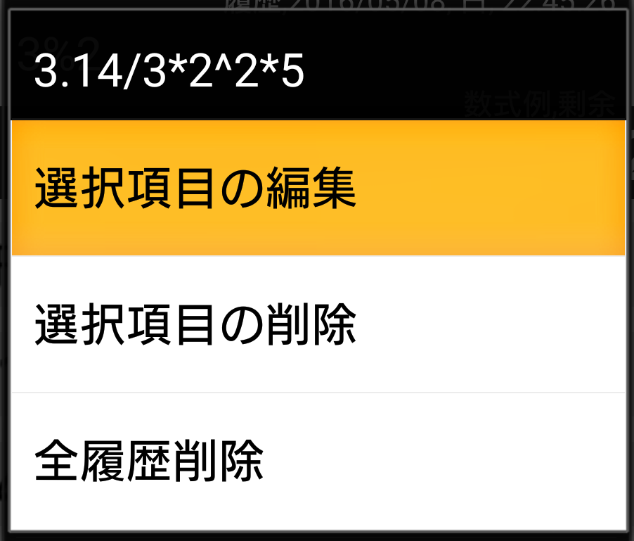
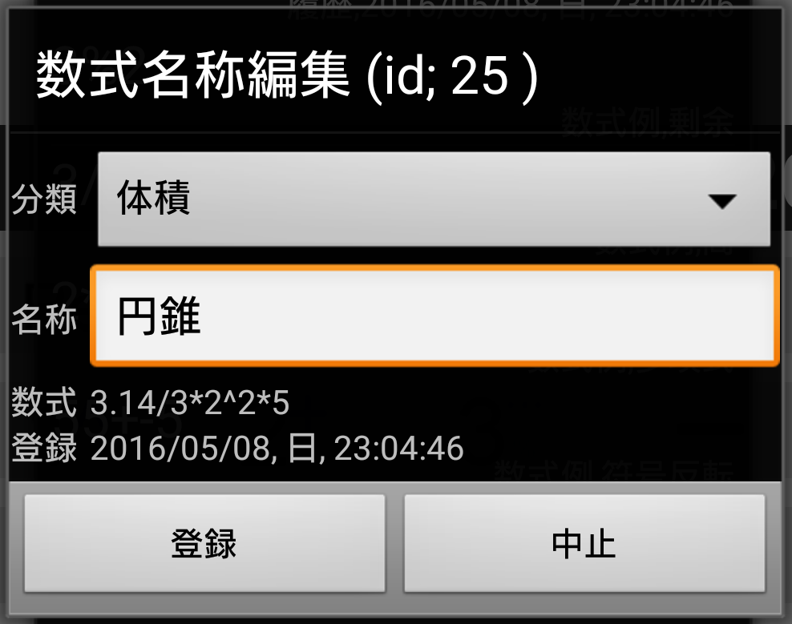

|

|
さんすう電卓
文字cal[Moji Karu]
|
このアプリは
文字で数式を書き込んで計算させる電卓です。
Text to Calculationなので読み方は「モジカル」くらいで如何でしょうか。
出来る計算は今の処、
「小学生の算数」+「一般向け」。
数式を書き込んで"= "を記入すると計算過程を含めて答えに辿り着くまでを書き出します。
このアプリの開発動機は小学生の息子に算数を教える事でした。
ですから「余り付きの割り算」や「計算順の表示」など一般的には煩わしい機能や表示になっていますが、以降のバージョンで切り替えを検討したいと思います。
|
数字も演算子もそのまま
|
|
-
誤入力がすぐ判明
-
変更したい部分だけを修正して再計算。
紛らわしいメモリ機能は不要
備考；
-
Windows10・メトロアプリの電卓も履歴として入力を確認する事は出来ますが、一旦入力した数式の再利用はできません。
-
競合するとしたらbao quanshouさんのScientific Calculatorやalbert soft さんのBest calculator、
それ以上の機能をお求めならRealMaxさんの関数電卓や、手書きで数式を書き込めるMyScript さんのMyScript Calculatorあたりでしょうか。
|

計算した数式をデータベース記録
|
|
-
"="を入力して回答を表示した時点で数式をデータベースに登録します。
呼出しは"Re"キーの長押しで"数式呼出し"リストダイアログを表示します。
-
*"Memory"の意味でキーの右上に"M"の文字の有るキーです
-
数式をロングタップすると"選択項目の編集"、"選択項目の削除"、"全履歴消去"といった操作メニューが表示されます。
-
データベースの動きを含め動作がおかしい時はメニュー\その他\設定初期化でデータベースファイルと設定ファイルを作り直します。
-
初期バージョンで表示していた数式のサンプルもここで表示します。
|

|
このデータベースには分類分けするための"分類"と各数式に付ける"名前"のフィールドが有ります。
-
登録した段階では分類は"履歴"、名前は登録された日時のタイムスタンプが入っています。
-
*"Memory"の意味でキーの右上に"M"の文字の有るキーです
-
Windows10・メトロアプリの電卓も履歴として入力を確認する事は出来ますが、一旦入力した数式の再利用はできません。
-
"全履歴消去"で分類が履歴のままの数式を消去します。
|

|
分類と名前を編集出来ます。 (Ver1.4以降)
-
分類はリスト上部のスピナーにリストアップされ同じ"分類名"の数式だけ絞り込んで表示します。
-
名称はそれぞれの数式に付ける名称です。
-
登録されたレコードはレコードIDで管理していますので重複しても構いません。
-
"全履歴消去"で分類が履歴のままの数式を消去します。
|

どこにでも貼り込める普通のテキスト
|
|
-
演算子はExcelなどの表計算アプリによくある特殊記号無しのテキスト形式ですから、 入力も含めて表示されているすべてを他のアプリにコピーペーストできます。
-
英語モードや日本以外で使われる場合はフォントの事情が分かりませんのでEXCELと同じ演算子で計算します。
-
数式例は再計算ボタンの長押しでダイアログ表示します）
-
データベースの動きを含め動作がおかしい時はメニュー\その他\設定初期化でデータベースファイルと設定ファイルを作り直します。
-
初期バージョンで表示していた数式のサンプルもここで表示します。
-
入力の表示部分をタップして選択した部分、もしくはフィールド全体をコピー
-
標準のインプットメソッドを使うとソフトキーボードが邪魔をしますのでVer1.3からクリップボードだけを利用します。
-
回答表示部分をタップすればフィールド全体（答えだけ）をコピー
-
３桁ごとの区切り記号を入れます ; 10000000 → 10,000,000
注記
-
AQUOS-Kの様に変換エリアを全画面表示してしまう機種もあるのでダイヤルキーの付いた端末は範囲選択やカーソルの表示などに制限が発生するので
Ver1.3から入力の表示部分をかな漢字入力連動のEditTextから、クリップボード機能だけに限定したTextViewに変更。
入力動作は無理矢理プログラムで作っているので不自然なところが有ります。例えば文字と文字との間に入るべき「カーソル」が使えないので1文字以上を選択する「キャレット」になっています。
|
その他の工夫
|
|
-
細かい選択操作の補助(Ver1.4)
数式入力エリア長押しで選択部分削除とペーストの補助ダイアログを表示します。
-
ダイアルキーにそのまま相当するキー配列。
通話/クリア/終話に相当するキーの下に電話用の12相当キーを配置。
※長押しで演算子を配置する事でキーの数を最小限に抑え、 ダイヤルキー付の端末はタッチパネルに触れる必要なく操作できます。
備考；キーフェイス
-
キーフェイスは試行錯誤ですが短押しで入力される数字は左側に大きく、長押しで入力される演算子や機能は右上に小さめに算数の記号で、
その記号が数学記号と入力すべき演算子が異なる時は右下に表示します。
注記；
-
四方向キーに四則演算子を割り付けたアプリもありますが、4方向キーはアイテム選択の機能が標準的な使い方ですから、
ダイヤルキーに相当する数字キーのサブ機能で四則演算子などを入力します。
ダイヤルキー付端末には特殊な構成の機器が有りますので機能が制限される場合もあります。
-
小学生に算数を説明する機能
余りを表示する割り算や、正しい計算順が確認できる様に複数行に分けて計算の経過を表示。
|
|
1
|
キーボード
|
|
|
タップ |
ロングタップ |
|
|
再計算 |
入力履歴/数式サンプルリスト表示
表示されたリストの数式に分類と名前を付けて残せる様にしました。 |
|
バックスペース |
全消去 |
|
終了
※ダイヤルキー付のみ
※タッチパネルは"="
（終了は戻るキーで） |
- |
 |
1 |
^2で二乗
^(1/2)でルート2 |
|
2 |
加算
1+1=2 |
|
3 |
余り付きの割り算
2%3=1...1 |
|
4 |
かけ算
3*2=6 |
|
5 |
イコールの入力で
計算開始 |
|
3 |
割り算
2%3=1...1
|
|
|
7 |
括弧(の開始側)
(1+3)/2=4/2=2の”(” |
|
8 |
減算
2-3=-1 |
|
9 |
閉じ括弧
(1+3)/2=4/2=2の”)” |
 |
カーソルの戻し
（左送り）機能
|
左へ1文字づつ選択範囲拡大
|
|
0 |
小数点
3.14などの". " |
|
カーソルの送り
（右送り）機能
|
右へ1文字づつ選択範囲拡大 |
|
タッチパネル付きの端末では一番右に短押し操作で演算子が入力できる様、ボタンを追加します。
|
|
|
2
|
インプットメソッドの切り替え
|
|
Ver1.1からキーボードを組み込みました。
-
ご利用の端末によって、狙い通りに数字入力用のキーが出なかったり、キー自体の機能も搭載しているインプットメソッドによって一定化しませんでした。
-
何よりも演算子スピナーから演算子を入力する操作性は悪いと判断し、スピナーは廃止。
-
タップとロングタップだけで操作できるキーにしました。
(当初考えていた「関数スピナー」も仕様を再考案中です)
-
今回はダイヤルキー付Android端末やガラケーから最近使い始めた方の使い勝手から電話のダイヤルキーをそのまま使える配置にしました。
Ver1.3から数式が入力される数式入力フィールドをインプットメソッドのソフトキーボードを表示しない基本的には表示専用のTextViewにしました。他のアプリとの連携に使うクリップボードの機能は残していますので、数式が入力をタップ、もしくはソフトキーボード最下段のカーソルで位置選択してご利用ください。
意図せずインプットメソッドのキーボードが表示されるケースが機種によって散見されるため、EditTextから変更しました。
注意：文字と文字との間で点滅するカーソルは実装できない様ですので
-
入力文字列の中を選択している時は(1文字だけ反転した)選択部分部分の前に文字挿入、
-
削除は選択されている部分
-
選択された部分が無ければ末尾に文字追加/末尾から先頭に、向かって削除(バックスペース)します。
-
ダイヤルキー付の場合は4方向キーの左右にもカーソルの左右移動を割り付けています。
-
数式入力フィールドタップした時の選択機能は全選択への選択範囲拡大と、選択部分の消去だけです。
細かい選択操作の補助(Ver1.4)
数式入力エリア長押しで選択部分削除とペーストの補助ダイアログを表示します。
-
クリップボードにコピーしたデータ(赤文字)が有る場合はそのデータのペーストか/範囲選択(赤文字)して削除するかを選択する「操作選択スピナー」を表示します
-
選択範囲が無い時は赤文字で"I"を表示してイサーションポイント(Iビームカーソル)の代わりの位置表示を行います。
*コピーした文字が無い場合はスピナーを表示せず、範囲選択削除のみを行います。
-
例えば「選択範囲にペースト」など複合操作は無限に考えられますが、操作をシンプルにするために「一旦削除してからペースト」という使い方にして下さい。
（中途半端な仕様ですがVer2.0をターゲットにEditText同等機能を目指します。）
|
|
3
|
その他の注意事項
|
|
- 計算の実行
- 長押し
- 先頭から" = "直前の数字まで
-
-
カーソルが何処に有っても" = "は直強制的に一番最後の数字の後ろに入力されます。
-
最初のバージョンはインプットメソッドをそのままキーに使っていたので、「一連の計算式として読み取る範囲は先頭から改行まで、=を入力すると自動的に改行を入れて計算を開始します。
-
続けて計算する時は改行キーで1行以上空けて次の数式を入力して下さい。」という仕様でしたが、
キーボードを組み込み、本来はイレギュラーな複数の数式（改行から上を無視させる）対応メソッドを除去する事で誤動作になりそうなトラップを不要にしました。
- 優先順位付け計算
-
もしくは
長押し
- 先頭から" = "直前の数字まで
-
-
括弧内の項
-
冪乗と冪根
-
乗法と除法
-
加法と減法
同じ順位の計算なら左から計算します。
-
当たり前の事ですが、後日改めて関数を組み込前にバグ探しを行いたく、優先的に作りました。当面は小学生の息子に算数を教える意図もあります。
- 累乗 ・ 累乗根
-
長押し
- ある一つの数同士を繰り返し掛け合わせる冪乗（べきじょう）、または累乗（るいじょう）(Exponentiation)は上付き文字でテキスト入力できる書き方ではないのでEXCEL風に「^」を使います。
-
例えば
例えばルート２なら
-
2^(1/2)=2^0.5=1.414213562373095
-
累乗も累乗根もJAVAのMath.pow関数を用い、精度はDouble値で定義されているとおりです。
- 再計算
-
短押し
- 数字や演算子を書き換えたり、修正する時はこのボタンを押してください。
" = "以降を消去して再計算を行います。
-
-
何を登録したのか記憶に怪しいメモリー機能は不要な事を実感頂けると思います。
備考；"="を入力して計算結果を出した後で入力を修正する前に、それまでの計算結果と過程を消去して再計算します。
- 記録
-
長押し
- 一度計算した数式をデータベースに記録します。
同じパターンの計算を繰り返すときは再計算ボタンの長押しで一度計算した数式を読み出せます。
- カーソル操作
-
- ※表示部分をタッチするとキーボードがインプットメソッドのキーに切り替わりますが、
多くのインプットメソッドの範囲選択タブは小さすぎて操作できなかったり、
切り替わること自体が煩わしい事が有りますので、表示部に触らずカーソル操作できるキーにしました。
※このキーはダイヤルキーのSTARキーとPOUND（#）キーに相当します。 Ver1.3から計算後にカーソル操作すると一つ目の"="以降を消去します。
-
他の人に説明する時は計算過程も含めた範囲選択に用途は有るかと思いますが
-
タッチ選択で文字が反転できてるので、ソフトキー操作のカーソル移動は選択したい処に早く到達できる様、「再計算」と連携させました。
|
思い出話(と言うか制作動機)
私が初めて見たパソコン(SE30)には一行表示の簡易な電卓アプリがバンドルされていました。
大きな画面に電卓キー以上に多くのキーを付けたパソコンで7セグメント管を一列に並べて答えだけしか表示できない「電卓」。 ・・・・・・・Appleらしい微笑ましいジョークアプリだなと思いました。
ところがそれから後に発売されるパソコンから今日のスマホに至るまで「あの形が電卓」とされ、未だに改められる気配もありません。
途中で入力間違いをしても気づけない。部分修正すらできない。大きな画面もインタフェースの進化もお構いなしで今となっては性質の悪いパロディーにしかなっていない「電卓アプリ」が疎ましく思えてきました。
もう一つの動機は自分の頭の体操。簡単な四則演算でも計算の順番を間違うと答えも変わります。当たり前の事ですが「自分は常識的に計算できる」と思いこんでいる大人ほど、恥辱的に計算間違いします。 つまらない恥をかく前にトレーニングできればと思います。
- リリース記録
-
- 1.4.1; 2016年5月8日；Android 5.1対応
- ToolBarなど追加機能対応
-
上部に組み込むとタイトル部分が邪魔になる(入力エリアが小さくなる)ので、右下にメニュー機構を組み込みました。
- ヘルプ機構の改定
-
修正齟齬の防止とアプリサイズの肥大を防止する目的でwebのヘルプページに統合
テスト端末
Android5.1.1 ； 501SO(Xpelia Z5)
Android4.4.2 ； 304SH
Android4.2.2 ； SH-08E (7インチタブレット)
Android4.1.2 ； 203SH
Android4.0.3 ； is15SH(ダイヤルキー付)
- 1.4.0 ; 2015年11月3日；
- 入力した数式のデータベース化で数式に分類と名前を付けるIF追加
*名称入力のソフトキーボードで改行ボタンが消しきれてませんが、改行記号を入力しても補正プログラムで消去します。
- 前の計算の答えをペースト、もしくは選択範囲削除をサポートするIFを追加
- "((-2))"の様な"("が残って異常終了するバグの改修
*"("と")"の数が違う様な入力ミスについては補正されません（プログラムで対処しきれませんのでご容赦ください）
テスト端末
上記に加え
Android4.2.2 ； 206SH
- 1.3.0 ; 2015年10月12日；
- 入力した数式のデータベース化(入力した数式リスト)
1)"="を入力して計算させた時点で数式をデータベースに記録
2)"Re"ボタンの長押しでリストダイアログ表示
3)そのリスト項目を長押しして消去/全履歴消去
4)計算例もサンプル程度に表示
- 以下のバグ修正を優先させる為、DB機能作成中断
1)ソフトキーボードが邪魔になって操作できなくなる機種が有るのでEditTextから(コピー機能を残した)表示専用のTextViewに変更
2)余り付き計算の3桁区切り記号
3)小数部の桁落ち対策
- 1.2.0 ; 2015年9月30日；
- 答えの表示枠追加
ここをクリックする事でクリップボードにデータコピーできる仕様に変更
（他のインプットメソッドを起動する必要無し）
計算結果が出た時点で答えの表示枠を選択していますから
ダイヤルキー付端末はそのまま決定ボタンを押してください。
テスト端末
Android4.4.4 ； SHF32 (AQUOS K)
- 1.1.1 ; 2015年9月28日；
- 小数計算修正
- 1.1.0 ; 2015年9月20日；
- 利便性の向上（というか妥当な操作性）を目標にキーボード装備
- 対応をAndroid3.0以上として内部構造再検討
- タッチパネルが無い特殊な端末(AQUOS K)については端末を借用できる9月中、検討継続
カーソルの表示ができないので、方法検討中
- 2013年12月14日；初回リリース
- 最初はキーボード無し。インプットメソッドのキーをそのまま使う
- 演算子はスピナーから選択。という仕様でスタート
テスト端末
Android4.1.2 ； 203SH
Android4.0.3 ； is15SH(ダイヤルキー付)
Android2.3.3 ； 007SH(ダイヤルキー付)
- 課題
-
- 関数の利用
*JAVAの組み込み関数の流用
*Excel関数とのすり合わせ
- 表示改善
①計算経過の表示/非表示切替
②単位・補助単位対応で処理範囲(有効桁数)から外れる事の阻止
- 連携強化
①ファイル書き出し(恒久保存)
②メール送信（PCなど他の機器への連携）
- このアプリ自体をインプットメソッドにする事で
①キー切り替えのロス削減
②メールなどの入力中でも必要に応じた計算機能の提供